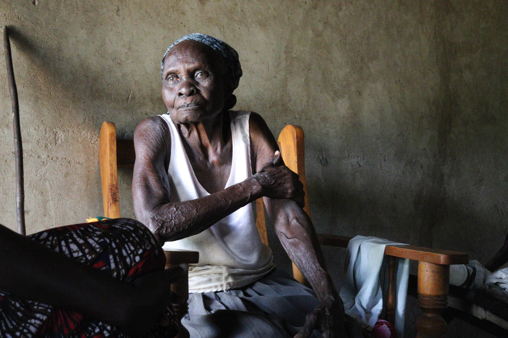
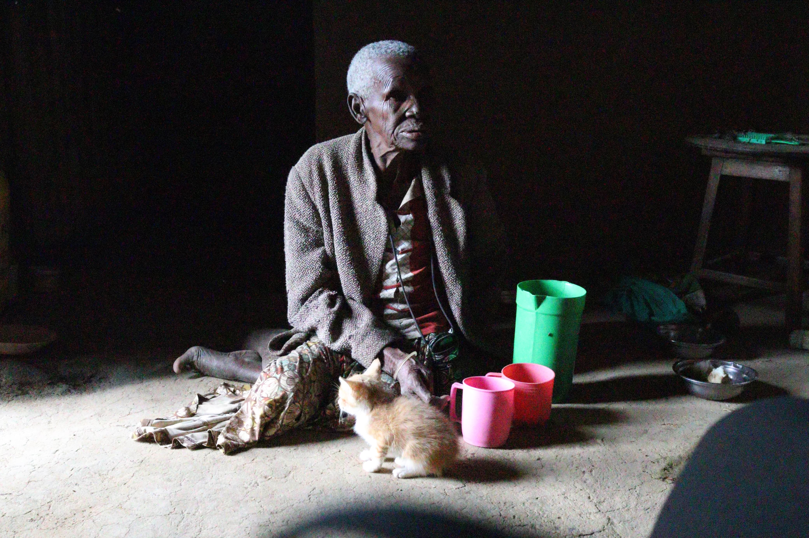
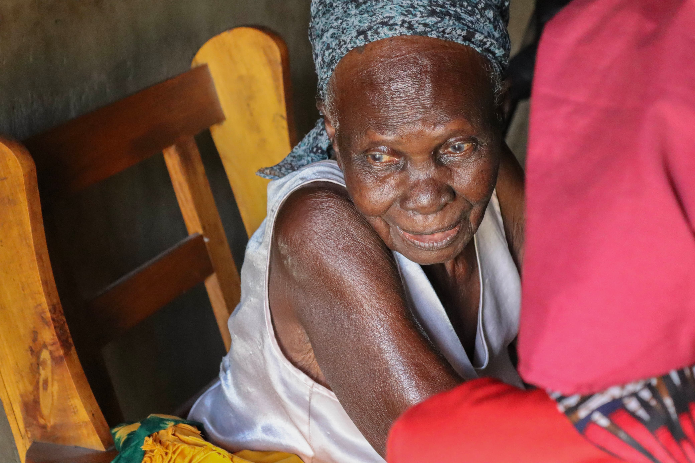
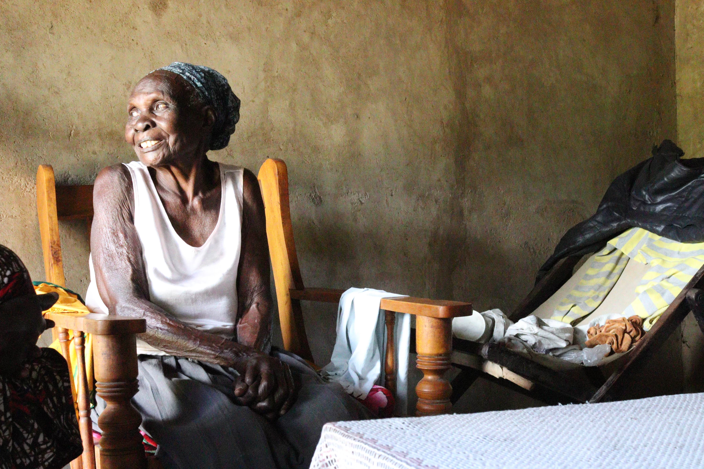
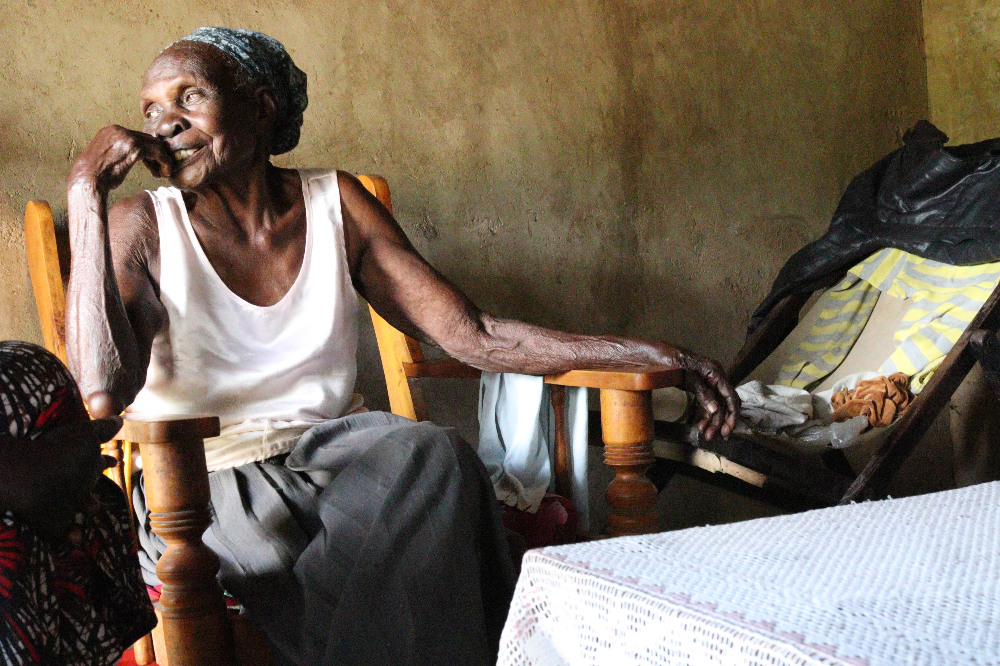

Safe washrooms
We build simple, private washrooms — like the metal-sheet washroom for Pessila — so no elder has to walk into the dark again.

Community Based Organisation · Kenya
Mananda exists because growing old should never mean being left unsafe, unseen or alone. We begin with something simple — and life-changing — for the elderly: a safe place to go.
The Problem
In many homes here, there is no latrine — not even a simple pit. When night falls and nature calls, our elderly have only one choice: to walk into the bush, alone, in the dark.
One night an elderly woman of 75 went out to relieve herself near the bushes by her home, because she had no toilet of her own. There, in the dark, she was attacked and gang-raped. She was someone's mother. Someone's grandmother.
Stories like hers are why Mananda exists. The lack of a toilet is not just an inconvenience — for an older person it is a question of safety, health and dignity. We refuse to accept that this is simply how things are.


Who We Are
Mananda is a grassroots Community Based Organisation founded in Kenya by people who simply could not look away.
We grew out of a deep love and respect for our elders — the people who raised our families and built our communities, and who too often spend their final years without the basic care they gave to everyone else.
We are local. We know these families by name. We sit with them, listen to them, and work alongside them to meet real needs — starting with safe sanitation, and growing from there.
See our workWhat We Do
We build simple, private washrooms — like the metal-sheet washroom for Pessila — so no elder has to walk into the dark again.

We help with the daily essentials — clean water, food and household needs — like the yellow water pots we brought to Jennifer.

We visit, we listen, and we make sure our elders know they are loved and not forgotten.
Our Elders
These are the people you would be standing with. Real names, real homes, real lives.




Get Involved
Every washroom built, every visit made, every pot of clean water is possible because people choose to help. Here is how you can.
Contact
Want to help, partner, or simply learn more? Reach out — we would love to hear from you.